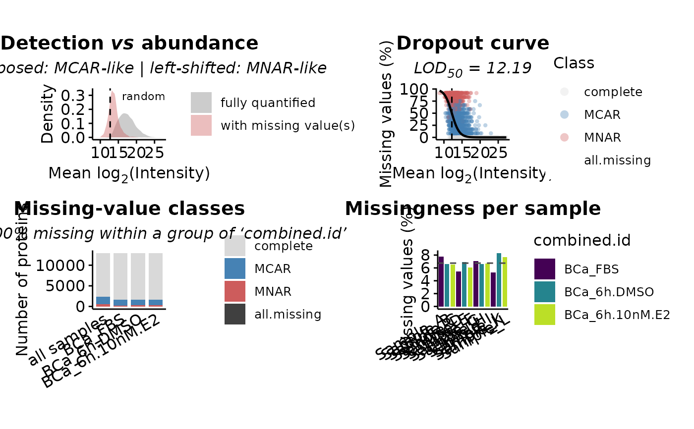

Diagnostics of the missing-value structure of a proteomics dataset, aimed at
discriminating values missing not-at-random (MNAR, left-censored, below detection limit) from values
missing (completely) at random (MCAR), before/while choosing an imputation strategy.
The classification of the missing values follows the same logic of the DEprot "double-imputation"
strategy: values missing in at least percentage.missing% of the replicates of a group are considered
MNAR (and would be replaced by randomize.missing.values using the bottom tail.percentage% of the
distribution), while the remaining missing values are considered MCAR (and would be replaced by impute.counts).
missingness.diagnostic(
DEprot.object,
group.column = NULL,
which.data = "auto",
percentage.missing = NULL,
tail.percentage = NULL,
contrasts = NULL,
sample.subset = NULL,
min.detected = 1,
max.proteins.heatmap = 2500,
cluster.method = "ward.D2",
colors = c(detected = "grey85", MNAR = "indianred", MCAR = "steelblue", all.missing =
"grey25"),
jaccard.palette = viridis::mako(100, direction = -1),
dendrogram.color = "black",
convert.log2 = TRUE,
seed = 20240101,
verbose = TRUE
)An object of class DEprot or DEprot.analyses.
String indicating the metadata column defining the groups of replicates within which
the missing values are counted. Default: NULL (retrieved from the randomization parameters stored in the
object; if not available, from the first contrast of a DEprot.analyses object).
String indicating which counts should be used. One among: 'auto', 'raw', 'normalized',
'randomized', 'imputed'. When 'auto' (default) the lowest available level is used, following the
priority raw > normalized > randomized > imputed. Default: "auto".
Numeric value between 0 and 100 indicating the minimal percentage of missing values
per group required to consider a protein MNAR-like in that group. Default: NULL (retrieved from the
randomization parameters if available, otherwise 100, the default of randomize.missing.values).
Numeric value between 0 and 100 (excluded) indicating the bottom percentage of the
distribution used by randomize.missing.values to sample the random values. Used here only to display the
corresponding intensity threshold on the diagnostic plots. Default: NULL (retrieved from the randomization
parameters if available, otherwise 3).
Vector of contrast indexes (or names) for which a contrast-level diagnostic should be computed.
Only used when a DEprot.analyses object is provided. Use NULL for all the contrasts available and
NA/"none" to skip the contrast-level analyses. Default: NULL (all contrasts).
String vector indicating the samples (column.id) to keep. Default: NULL (all samples).
Integer indicating the minimal number of samples in which a protein must be detected to be
included in the intensity-dependent diagnostics (density and dropout curve). Default: 1.
Integer indicating the maximum number of proteins displayed in the missingness heatmap
(randomly sampled among the ones showing at least one missing value, in order to limit the clustering time).
Default: 2500.
String indicating the agglomeration method used by stats::hclust for the rows of the
missingness heatmap and for the clustering of the samples in the Jaccard similarity heatmap. Default: "ward.D2".
Named string vector with the colors used for the missing-value classes. Names required:
'detected', 'MNAR', 'MCAR', 'all.missing'. Default: c(detected = "grey85", MNAR = "indianred", MCAR = "steelblue", all.missing = "grey25").
Vector of colors corresponding to the palette to use for the color scale of the
sample-vs-sample Jaccard similarity heatmap. Default: viridis::mako(100, direction = -1).
String indicating the color of the dendrogram lines of the Jaccard similarity heatmap.
Default: "black".
Logical value to define whether counts should be converted to log2. Default: TRUE.
Numeric value indicating the random seed used to subsample the proteins in the heatmap. Default: 20240101.
Logical value to define whether messages should be printed. Default: TRUE.
An object of class DEprot.missingness.
Six families of diagnostics are computed:
detection.density: densities of the average protein intensity, split by proteins fully quantified and proteins showing at least one missing value. Superimposed densities support MCAR, a left-shift of the incomplete proteins supports MNAR (left-censoring).
dropout.curve: per-protein fraction of missing values as a function of the average protein
intensity, with the fitted logistic dropout model. The intensity at which 50% of the values are missing is
reported as LOD50, i.e. an empirical estimate of the limit of detection.
missingness.heatmap: binary protein-by-sample map in which each missing cell is colored according to the strategy that would be applied to it (randomization of the bottom distribution for MNAR-like cells, imputation for MCAR-like cells).
missing.per.sample / detection.frequency: completeness summaries per sample and per protein.
sample.similarity: Jaccard similarity of the detection patterns between samples (clustered, with dendrogram); a structure that follows the experimental groups/batches indicates that the missingness is not completely at random.
pattern.summary / upset: number of proteins per missing-value class, globally and per group, and intersections of the MNAR-like patterns between groups.
dpo <- load.counts2(counts = DEprot::unimputed.counts,
metadata = DEprot::sample.config,
log.base = 2,
data.type = "norm")
#> The counts matrix contained 295 rows with only NA values.
#> The latter have been removed from the matrix.
miss <- missingness.diagnostic(DEprot.object = dpo,
group.column = "combined.id")
#> Counts available: normalized | counts used: normalized.
#> MNAR definition: >= 100% of missing values within the groups of 'combined.id' (parameters: user-defined (defaults)).
#> Warning: Using `size` aesthetic for lines was deprecated in ggplot2 3.4.0.
#> ℹ Please use `linewidth` instead.
#> ℹ The deprecated feature was likely used in the ComplexUpset package.
#> Please report the issue at
#> <https://github.com/krassowski/complex-upset/issues>.
#> Warning: for '≥100%' in 'mbcsToSbcs': >= substituted for ≥ (U+2265)
miss
#> DEprot.missingness object:
#> Counts used: normalized (available: normalized)
#> Proteins: 12944
#> Samples: 12
#> Group column: combined.id
#> MNAR defined when: >= 100% missing values within a group
#> Parameters: user-defined (defaults)
#>
#> Missing values: 10481/155328 (6.75%)
#> of which MNAR: 3056 (29.2% of the missing values)
#> of which MCAR: 7425 (70.8% of the missing values)
#>
#> Estimated LOD50: 12.186
#> Dropout slope: -0.984 (p = <2e-16)
#> Intensity shift: incomplete - complete = -3.571 (p = <2e-16)
#>
#> Interpretation: the missingness is intensity-dependent (MNAR/left-censoring is dominant).
#>
#> Proteins per missing-value class:
#> missing.class n.proteins percentage
#> 1 complete 10646 82.246601
#> 2 MCAR 1772 13.689740
#> 3 MNAR 526 4.063659
#> 4 all.missing 0 0.000000
plot(miss)
